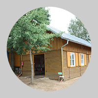
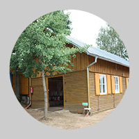

Letní dìtský tábor s Divadlem Radar
Hlavní vedoucí: Kristına Holeèková (tel. 737 553 098)
Termín: 11.—24. 8. 2013
Místo: Táboøištì Plichtice
Holky, kluci, váení rodièe!
Jako kadoroènì, poøádáme i letos letní tábor pro všechny dìti z Ty-já-tru. Hodláme ve všech smìrech navázat na naše poslední tábory a pevnì vìøíme, e se to podaøí v tom nejlepším slova smyslu! Tábor bude pøipraven v první øadì pro dìti do patnácti let. Ty mohou vzít s sebou také svoje (stejnì staré) kamarády, kteøí do našeho souboru celoroènì nedocházejí. V programu budeme pochopitelnì pamatovat i na naše starší èleny – mladší osmnácti let (ani bychom však oèekávali úèast jejich kamarádù, kteøí nejsou našimi èleny). Táboøit budeme opìt ve stanech s podsadou. Táboøištì ji známe, nachází se v Plzeòském kraji, nedaleko mìsta Klatovy. Jde o stálý dìtský stanový tábor, jeho podrobnìjší popis naleznete níe.
 

{kind=link}
{kind=link}
Letní tábor „Plichtice 2013“ se bude konat od 11. srpna do 24. srpna 2013 v areálu letní turistické základny Pionýrské skupiny Safír Kdynì v Plichticích. Tábor se nachází v krásné pøírodní scenérii nedaleko Hnaèovského rybníka. Jde o stálý dìtský stanový tábor. Vaøit nám opìt budou naši vlastní kuchaøi. Stravovat se budeme pìtkrát dennì. Hlavní souèástí programu bude celotáborová tématická hra, vycházející z principù tvoøivé dramatiky. Chybìt nebudou ani letní sporty! Nìjaký èas strávíme rovnì péèí o tábor a klasickým tábornickým ivotem. Tábor je pøirozeným vyvrcholením celoroèní èinnosti našich kroukù a souborù, proto nás potìší, pokud se ho zúèastní hojné mnoství našich èlenù. Pøedbìné pøihlášky budou od èlenù Ty-já-tru pøijímány a do konce dubna 2013 pøednostnì pøed pøihláškami ostatních zájemcù. Od kvìtna pak pøijímáme všechny pøihlášky bez rozdílu a do naplnìní kapacity tábora. Cena tábora bude èinit 4.600,- Kè. Tábor je moné platit výhradnì bezhotovostnì, a to pøevodem na konto DDM. Platební pøíkaz vám pøijde mailem spoleènì s formuláøem závazné pøihlášky. To vše na základì odevzdání pøihlášky pøedbìné. Tu naleznete na našich webových stránkách (www.ty-ja-tr.cz). K mání bude té v Radaru u vedoucích kroukù. V cenì tábora je jídlo pìtkrát dennì, ubytovací poplatky, doprava autobusem tam a zpìt, vybavení táborové lékárny a program tábora. V cenì tábora není pojištìní. To proto, e drtivá vìtšina našich èlenù je pojištìna celoroènì v rámci docházky do Ty-já-tru. Kadý úèastník tábora bude potøebovat vlastní spací pytel a potvrzení od lékaøe o zpùsobilosti dítìte k úèasti na letním dìtském táboøe! Bliší informace dodáme pøihlášeným bìhem èervna.
Táboøištì
Název: Letní tábor Plichtice
Místo: Plichtice u Klatov
Kraj a okres: Plzeòský kraj, Klatovy
Dìti budou spát ve stanech typu "Osada" s pevnou døevìnou podsadou na nadzemních pódiích. Stany jsou vybaveny postelemi, polièkou, molitanem a dekou. V areálu táboøištì jsou i budovy, jako je napø. kuchynì, jídelna a sklad. Sociální zaøízen tvoøí venkovní umývárna s vodovodními vývody, suché WC a sprcha. Jedná se o velmi dobøe zavedený a vybavený polní stanový tábor v nadmoøské výšce 600 m. n. m. Pitná voda je pøímo v místì zabezpeèována z provìøeného zdroje (studna). Z hlediska hygieny je tábor zabezpeèen umývárnou a sprchou s moností teplé vody. Záchodky jsou suché, s potøebnou kvalitou a prostorovì odlišené dle pohlaví. Další potøeby zajišují ji uvedená mìsta a mìsteèka v okolí. Zdravotnická péèe je zabezpeèena v blízké Plánici nebo v Horaïovicích èi Klatovech. Je však zabezpeèena i pøímo v táboøe kvalifikovanými zdravotníky.
Dìkujeme a tìšíme se na Vaši úèast!
Kristýna Holeèková, hlavní vedoucí (737 553 098)